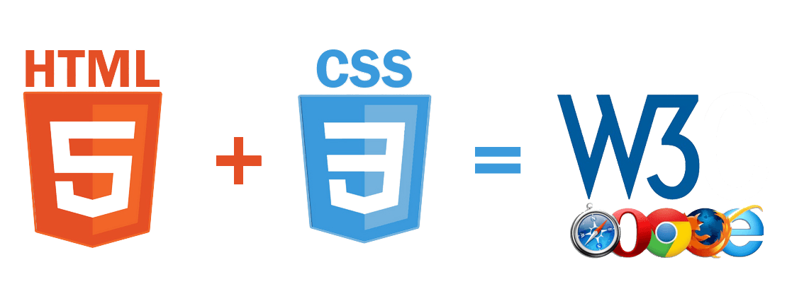

CSS
O Cascading Style Sheets (CSS) foi proposto pela primeira vez em Outubro de 1994, por Hakon Lie

Que queria facilitar a programação de sites, que na época era muito mais complexa. As pessoas tinham que utilizar mais códigos para chegar a um resultado simples, como criar uma tabela.
Em 1995 o CSS1 foi desenvolvido pela W3C, um grupo de empresas do ramo da informática.
A linguagem de estilos ganhou muito destaque entre 1997 e 1999, neste período ficou conhecido por grande parte dos programadores.
No inicio, o HTML era a única linguagem utilizada para criar sites. Quando começou a ganhar popularidade, algumas tags (comandos) foram criadas pelos navegadores para facilitar o uso da linguagem; Para facilitar ainda mais a criação destes layouts, a W3C (World Wide Web Consortium) criou o CSS, colocando a disposição dos Webdesigners.
O CSS é uma linguagem que determina a aparência (layout) de paginas para a Web. Este programa permite ao usuário criar paginas da Web com códigos mais fáceis de elaborar que os códigos HTML. Estes códigos permitem fazer as aplicações com facilidade.
Este programa é utilizado pelos programadores em todo o mundo. O CSS controla as opções de margem, linhas, cores, alturas, larguras, imagens e posicionamento, sem necessidade de programar em HTML. O CSS tem também alguns códigos prontos, permitindo aos usuários pouparem tempo criando códigos muito comuns.
Benefícios da utilização do CSS
- A partir de um só documento do CSS, controlam-se vários documentos .html .
- Facilidade de criação dos layouts, que não precisam de códigos muito complicados
- Linguagem de rápido aprendizado
O CSS é mais um dos programas para facilitar a vida de quem trabalha na área de informática. Este programa, embora tenha algumas falhas - na realidade as falhas são dos navegadores que não implementam o CSS corretamente, como algumas versões do Internet Explorer -, ajuda muito na hora de criar sites e paginas da WEB.
Referências: InfoEscola
Recomendação
Para quem se interessar e quiser fazer um Curso Grátis e com qualidade pode acessar o canal do youtube do Curso em Vídeo Lá ele disponibiliza um curso completo e bem legal para iniciantes em HTML5.